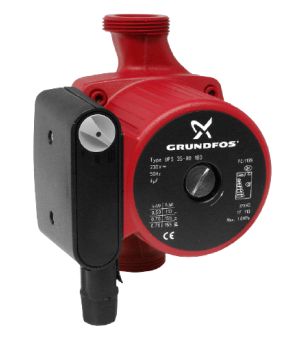
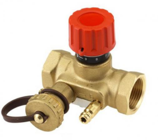
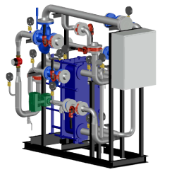
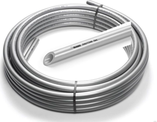
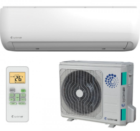
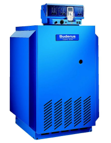
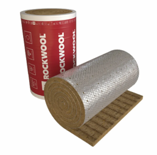
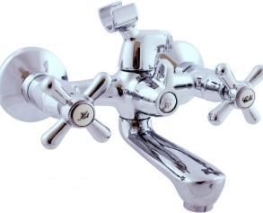

Наряду с осуществлением деятельности в области строительства, являясь официальным представителем заводов-производителей, выполняет комплексную комплектацию объектов оборудованием и материалами, необходимыми на каждом этапе реализации любого проекта.

Насосное оборудование (Grundfoss, Wilo)

Запорная арматура и теплоавтоматикаа (Danfoss, Gross, Tecofi, Giacomini, TA)

Теплообменное оборудование и БТП (Alfa Laval, Danfoss, Ридан)

Трубопроводы (REHAU, UPONOR, PRO-Aqua, Sinikon)

Климатические системы(Systemair, York, Carrier, VKT, Тепломаш)

Вихревые генераторы и котельное оборудование (Buderus)

Изоляция (Rockwool, Energoflex, Kaiflex, Thermaflex)

Сантехника (смесители, сан фаянс, системы инсталляций, технологическое оборудование)